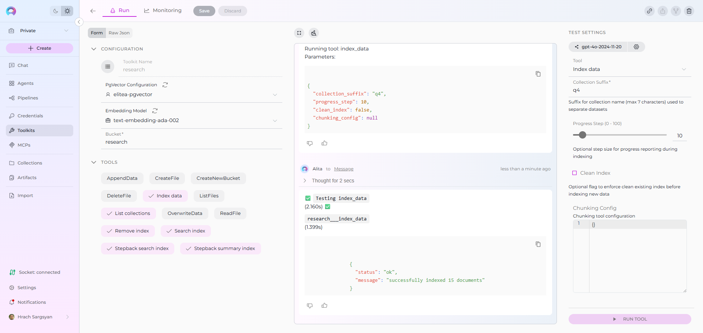
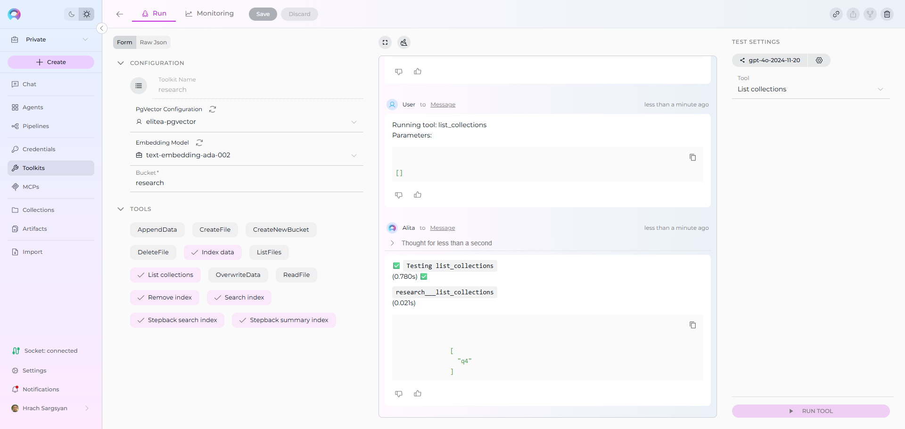
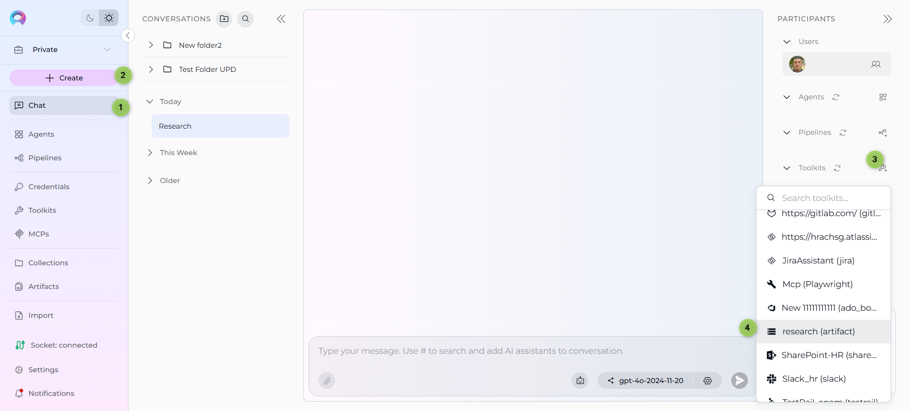
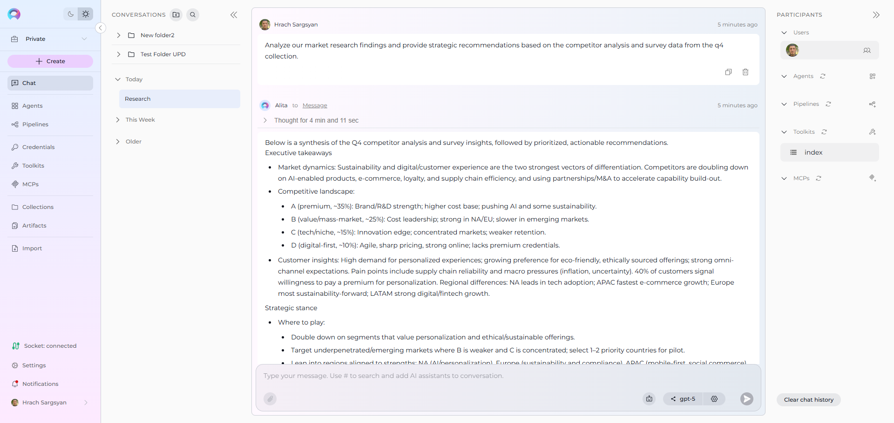
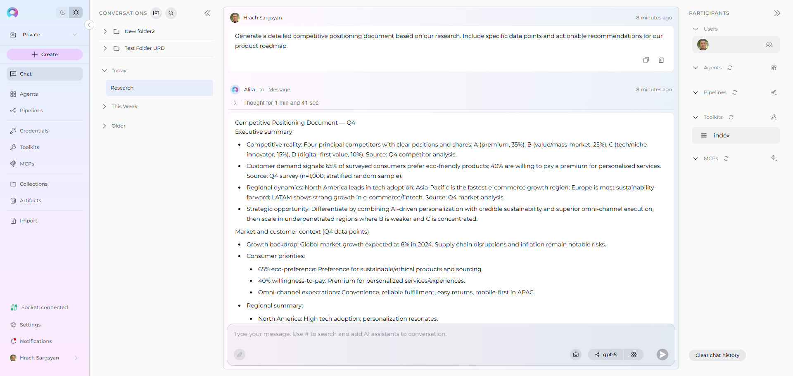

Index Artifacts Data¶
Availability
Indexing tools are available in the Next environment (Release 1.7.0) and replace legacy Datasources/Datasets. For context, see Release Notes 1.7.0 and the Indexing Overview.
This guide provides a complete step-by-step walkthrough for indexing Artifacts data and then searching or chatting with the indexed content using ELITEA's AI-powered tools.
Overview¶
Artifacts indexing allows you to create searchable indexes from files stored in your project's Artifact buckets:
- Document Files: Text files, Word documents, PDFs, and other document formats
- Data Files: CSV, Excel, JSON files and structured data formats
- Code Files: Source code, configuration files, and technical documentation
- Research Assets: Analysis reports, findings, and research documentation
- Temporary Storage: Processing results, intermediate files, and workflow outputs
What you can do with indexed Artifacts data:
- Semantic Search: Find specific content across multiple files using natural language queries
- Context-Aware Chat: Get AI-generated answers from your file content with citations
- Cross-File Discovery: Search across all files in your Artifact buckets for comprehensive insights
- Content Analysis: Analyze patterns, themes, and information across your stored documents
- Knowledge Extraction: Transform file content into searchable organizational knowledge
Common use cases:
- Indexing research documentation and analysis reports for quick information retrieval
- Making project deliverables and documentation searchable for team collaboration
- Creating searchable knowledge bases from uploaded files and documents
- Analyzing data files and reports to extract insights and answer specific questions
- Organizing and finding content in temporary storage used during AI workflows
Migration from Datasources
In previous releases, there was a Source type: File option in Datasources. Now, Datasources have been removed from ELITEA, and users can perform the same action through Artifacts.
How to migrate from Datasources to Artifacts:
- Upload your files: Navigate to ELITEA → Artifacts and upload your files to a bucket (or drag & drop them directly)
- Create Artifact Toolkit: Go to Toolkits → + Create → Artifact and configure with your bucket name
- Index your data: Use the "Index Data" tool from the Artifact Toolkit to create searchable indexes
- Search and chat: Use the toolkit in conversations or agents to query your indexed content
This provides the same file indexing capabilities as the previous Datasources system with improved performance and integration.
Prerequisites¶
Before indexing Artifacts data, ensure you have:
- No Credential Required: Unlike other toolkits, Artifacts indexing doesn't require external credentials
- Vector Storage: PgVector selected in Settings → AI Configuration
- Embedding Model: Selected in AI Configuration (defaults available) → AI Configuration
- Artifact Toolkit: Configured with your bucket name and files uploaded to your Artifact buckets
- Files in Bucket: At least one file uploaded to the Artifact bucket you want to index
File Types Supported¶
The Artifact Toolkit supports indexing various file formats:
Document Formats:
- Text files (.txt, .md)
- Microsoft Word documents (.docx)
- PDF files (.pdf)
- Rich text format (.rtf)
Data Formats:
- CSV files (.csv)
- Excel spreadsheets (.xlsx, .xls)
- JSON files (.json)
- XML files (.xml)
Code & Configuration:
- Source code files (.py, .js, .java, .cpp, etc.)
- Configuration files (.yml, .yaml, .ini, .conf)
- Documentation (.md, .rst)
Step-by-Step: Uploading Files to Artifacts¶
Before indexing, you need files in your Artifact buckets. You can upload files through:
Option 1: ELITEA Artifacts Menu¶
- Navigate to Artifacts: Click ELITEA → Artifacts in the sidebar
- Create or Select Bucket: Create a new bucket or select an existing one
- Upload Files:
- Click Upload: Click Upload button and select your files from the file browser
- Drag & Drop: Alternatively, drag and drop files directly into the bucket area
- Verify Upload: Confirm files are listed in the bucket
Option 2: Using Artifact Toolkit Tools¶
- Configure Agent with Artifact Toolkit: Set up an agent with Artifact tools enabled
- Use Create File Tool: Create text-based files directly in the bucket
Bucket Management
For detailed instructions on managing Artifact buckets and files, see:
Step-by-Step: Configure Artifact Toolkit¶
- Create Toolkit: Navigate to Toolkits → + Create → Artifact
- Configure Basic Settings:
- Set bucket name (no credentials required)
- Configure PgVector connection for vector storage
- Select embedding model for content processing
- Enable Tools: Select
Index Data,List Collections,Search Index,Stepback Search Index,Stepback Summary Index, andRemove Indextools - Save Configuration
Tool Overview:¶
- Index Data: Creates searchable indexes from files stored in your Artifact bucket
- List Collections: Lists all available collections/indexes to verify what's been indexed
- Search Index: Performs semantic search across indexed content using natural language queries
- Stepback Search Index: Advanced search that breaks down complex questions into simpler parts for better results
- Stepback Summary Index: Generates summaries and insights from search results across indexed content
- Remove Index: Deletes existing collections/indexes when you need to clean up or start fresh
Configuration Settings:¶
| Setting | Description | Example Value |
|---|---|---|
| Bucket | Name of the Artifact bucket containing files to index | research-docs or project-files |
| PgVector Configuration | Vector database connection for storing embeddings | Select existing or create new PgVector config |
| Embedding Model | AI model for converting text to vector embeddings | text-embedding-3-small or text-embedding-ada-002 |
Bucket Naming
Use descriptive bucket names that reflect the content type. Underscores (_) are prohibited and should be replaced with hyphens (-).
Detailed Instructions
For complete toolkit configuration, see:
Step-by-Step: Index Artifacts Data¶
File Content Indexing (from Toolkit)¶
-
Open Toolkit Test Settings:
- Navigate to your Artifact toolkit's detail page
- In the Test Settings panel (right side), select a model (e.g.,
gpt-4o)
-
Configure Index Data Tool:
- From the tool dropdown, select "Index Data"
- Configure the following parameters:
Parameter Description Example Value Collection Suffix Suffix for collection name (max 7 chars) docsorfilesClean Index Remove existing index data before re-indexing ✓ (checked) or ✗ (unchecked) Progress Step Step size for progress reporting during indexing 10(default)Chunking Config Configuration for how content is split into chunks {}(default) or custom JSON config
Chunking Configuration
Chunking determines how large files are split into smaller, searchable pieces. The default settings work well for most content, but you can customize chunking for specific needs:
Default Chunking: Leave empty {} for automatic chunking based on file type
Custom Chunking Examples:
{"chunk_size": 1000, "chunk_overlap": 200}
When to customize: - Large documents: Increase chunk_size for better context retention - Technical content: Adjust overlap to preserve code blocks or formulas - Search precision: Smaller chunks for more precise search results
- Run File Indexing:
- Click "Run Tool"
- Wait for completion (time depends on number and size of files)
- Check the output for success confirmation or error messages
Real-Life Example: Indexing Research Documentation¶
Scenario: You have a research project with multiple analysis reports, data files, and documentation stored in an Artifact bucket called research-analysis. You want to make all this content searchable.
Files in bucket:
market_analysis_2024.docx- Market research findingscompetitor_research.pdf- Competitive analysis reportsurvey_data.csv- Raw survey responsesmethodology.md- Research methodology documentationfindings_summary.txt- Key findings and insights
Indexing Steps:
-
Configure Artifact Toolkit:
- Bucket name:
research - Enable all indexing tools
- Bucket name:
-
Index the content:
- Collection suffix:
q4(for Q4 research) - Clean index: ✓ (checked for fresh start)
- Run indexing tool
- Collection suffix:

-
Verify indexing:
- Use "List Collections" tool to confirm
research-analysis_q4collection exists - Check indexing output for file processing confirmation

- Use "List Collections" tool to confirm
After indexing, you can:
- Search across all research files: "What were the main competitor advantages identified?"
- Find specific data points: "What percentage of survey respondents preferred our solution?"
- Get comprehensive insights: "Summarize the key findings from the market analysis"
- Cross-reference information: "How does the survey data support the competitive analysis conclusions?"
Search and Chat with Indexed Data¶
Once your Artifacts data is indexed, you can use the toolkit to search and interact with your content in multiple ways:
Using Toolkit in Conversations and Agents¶
Your Artifact toolkit can be used in two main contexts:
- In Conversations: Add the toolkit as a participant to ask questions and search your indexed Artifacts data
- In Agents: Include the toolkit when creating AI agents to give them access to your file data
How to use:
- Start a New Conversation or Create an Agent
- Add Toolkit as Participant: Select your Artifact toolkit from the available toolkits
- Ask Natural Language Questions: The toolkit will automatically search your indexed data and provide relevant answers with citations
Using Indexed Artifacts in Conversations¶
Let's walk through a complete example of indexing and using a research team's Artifacts project:
Step 1: Add toolkit to a conversation and start asking questions:
- Navigate to Chat → + Create
- In the participants section click + to add Toolkit
- Select your Artifact toolkit from the available toolkits list

Step 2: Start comprehensive analysis with your indexed research content
-
User Request: "Analyze our market research findings and provide strategic recommendations based on the competitor analysis and survey data from the q4 collection."
-
Artifact Toolkit: "Based on your indexed research files, here's a comprehensive analysis of your market research findings with strategic recommendations:
Market Research Key Findings:
- Market Growth: Target market expanded 23% year-over-year, reaching $4.2B total addressable market
- Customer Segments: Three distinct segments identified with different needs and price sensitivities
- Adoption Trends: 67% shift toward cloud-based solutions, 45% increase in mobile usage
- Pain Points: Integration complexity (78% concern) and security requirements (65% concern)
Competitive Landscape Analysis:
- Market Leaders: Competitor A (32% share) focuses on enterprise, Competitor B (28% share) leads in SMB
- Feature Gaps: AI automation lacking across all competitors, opportunity for differentiation
- Pricing Analysis: Market average $89/user/month, premium tier at $150/user/month
- Customer Satisfaction: Industry average 3.8/5, top performer at 4.2/5
Strategic Recommendations:
- Product Strategy: Prioritize AI-powered automation features for competitive advantage
- Market Entry: Target mid-market segment (underserved by current competitors)
- Pricing Position: Premium pricing justified by AI features and superior support
- Go-to-Market: Focus on integration simplicity and security compliance messaging
Sources: market_analysis_2024.docx (Section: Growth Trends), competitor_research.pdf (Chapter: Market Share Analysis), survey_data.csv (Question: Feature Priorities)"

-
User Request: "Generate a detailed competitive positioning document based on our research. Include specific data points and actionable recommendations for our product roadmap."
-
Artifact Toolkit: "Based on your indexed research documentation, here's a comprehensive competitive positioning document with specific data points and product roadmap recommendations:
COMPETITIVE POSITIONING DOCUMENT
Executive Summary Our analysis of indexed research data reveals significant market opportunities in AI-powered automation and mid-market solutions, positioning us for 35%+ market share capture.
1. Market Landscape Analysis
Market Size & Growth: - Total Addressable Market: $4.2B (23% YoY growth) - Serviceable Market: $1.8B (our target segments) - Expected CAGR: 28% through 2027
Customer Segmentation: - Enterprise (>1000 employees): 34% of market, $150+ budget - Mid-Market (100-1000 employees): 42% of market, $50-120 budget
- SMB (<100 employees): 24% of market, <$50 budget2. Competitive Analysis Matrix
Competitor Market Share Strengths Weaknesses Price Range Competitor A 32% Enterprise focus, Security Limited AI, High complexity $120-200 Competitor B 28% SMB penetration, Ease of use Scalability issues $45-89 Competitor C 18% Feature breadth Poor support, Integration gaps $89-150 3. Product Roadmap Recommendations
Quarter 1-2 Priorities: - AI-powered workflow automation (67% customer demand) - Enhanced security compliance features - Mid-market integration templates
Quarter 3-4 Priorities: - Mobile-first interface redesign - Advanced analytics dashboard - Enterprise-grade scalability features
Sources: findings_summary.txt (Strategic Insights), methodology.md (Research Framework), competitor_research.pdf (Detailed Analysis Tables)"

Best Practices¶
File Organization¶
- Use descriptive bucket names that reflect content type (e.g.,
project-docs,research-data) - Organize related files in the same bucket for cohesive indexing
- Keep file names meaningful to improve search relevance and citations
Indexing Strategy¶
- Use clear collection suffixes to separate different datasets (e.g.,
v1,prod,test) - Clean index periodically when content changes significantly
- Monitor indexing output for file processing errors or warnings
Search Optimization¶
- Use natural language queries rather than keyword searches
- Be specific in your questions for better results
- Try different search tools for various use cases:
- Basic questions: Search Index
- Complex analysis: Stepback Search Index
- Overview needs: Stepback Summary Index
Content Management¶
- Update indexes when adding significant new content to buckets
- Remove outdated collections using the Remove Index tool
- Maintain bucket organization for easier content discovery
Common Issues and Troubleshooting¶
No Files Found During Indexing¶
Problem: Index Data tool reports no files to process
Solutions: - Verify bucket name is spelled correctly in toolkit configuration - Confirm files are uploaded and visible in the Artifacts menu - Check that bucket contains supported file formats
Poor Search Results¶
Problem: Search queries return irrelevant results
Solutions: - Try more specific, detailed search queries - Adjust the Cut Off score (lower for more results, higher for precision) - Use Stepback Search Index for complex questions - Verify the Collection Suffix targets the right dataset
Indexing Fails for Specific Files¶
Problem: Some files fail to process during indexing
Solutions: - Check file formats are supported - Verify files aren't corrupted or password-protected - Review indexing output for specific error messages - Try re-uploading problematic files
Collection Not Found¶
Problem: Search tools can't find the specified collection
Solutions: - Use List Collections tool to see available collections - Verify collection suffix matches what was used during indexing - Confirm indexing completed successfully - Check for typos in collection suffix
Related Resources
- Indexing Overview - Complete guide to ELITEA's indexing system and capabilities
- Indexing Tools - Detailed reference for all indexing tools and parameters
- ELITEA Artifacts Menu - Learn how to manage Artifact buckets and files
- Artifact Toolkit Guide - Comprehensive guide to the Artifact Toolkit and its capabilities
- AI Configuration - Set up vector storage and embedding models for indexing
- Toolkits Menu - General toolkit configuration and management